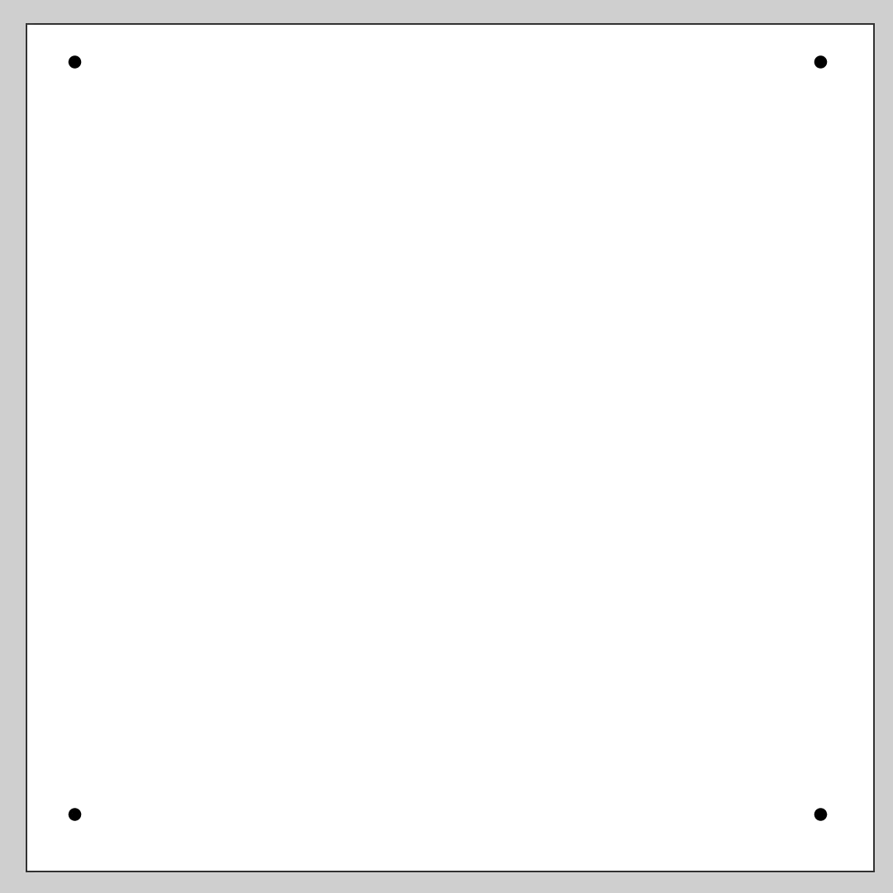
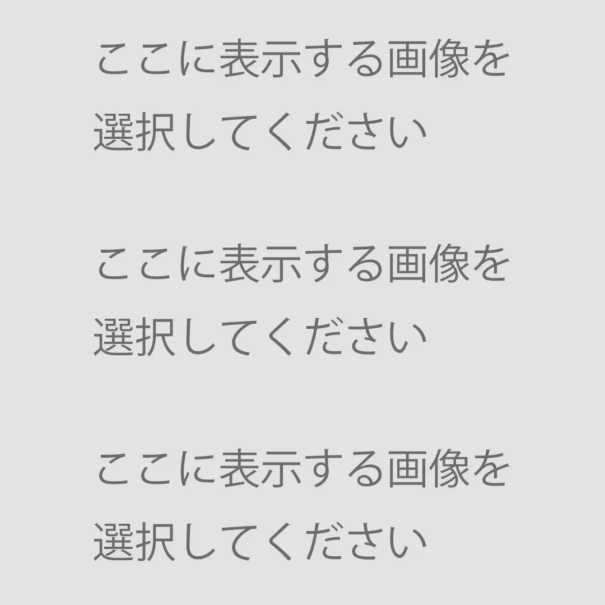

ストレージにアクセスできません。
【BACK】


画像を選択
保存(DOWNLOAD)
フォトフレームはアルバムではなく「ファイル」に保存されています。
フォトフレームはアルバムではなく「ダウンロード」に保存されています。
BACK
画像を合成しましたが、まだ「保存」していません。それでも良ければもう一度「BACK」ボタンを押して下さい。
You have not yet saved this image.
このWEBアプリは「縦向き」でのみ動作します。
This web-appli works only in portrait orientation.